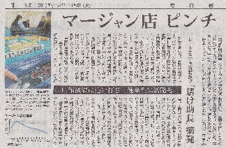

毎日新聞といえば、三大全国紙の一つ。その（H25）１月８日（火）の１面に こんな記事が。

記事によれば、平成11年末で全国の麻雀荘は12,000店くらいで（警察庁調べ）、これは30年前の約３分の１。そうなった原因には若者のマージャン離れもあるが、警察が多くのフリー雀荘の営業形態＝賭けを前提にしたレートを掲げていることに厳しく目を光らせていることも要因らしい。
また近年の自動卓には点棒の計算機能がついているのが普通だが、最近はレートや店に払う遊技料の設定まで出来る機能がついているものがある。実際 記事の小見出しには、“レート表示・点数精算卓「賭け助長」摘発”とある。持ち点の表示機能がついた自動卓は実に便利な存在であるが、レートの管理につながる機能まで付属したことが警察を刺激し、取り締まりが強化されたらしい。
１人でもぶらりと入ってゲームを楽しめるフリー雀荘は一つの営業形態ではあるが、記事の中に横浜のマージャン店経営者（男性 30歳）の話として「同業者にとって衝撃的な話、どこでもやっているのに....」とある。この意識というか 現状を改めない限り、風適法の対象からはハズレそうもない...
|